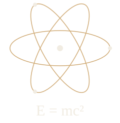
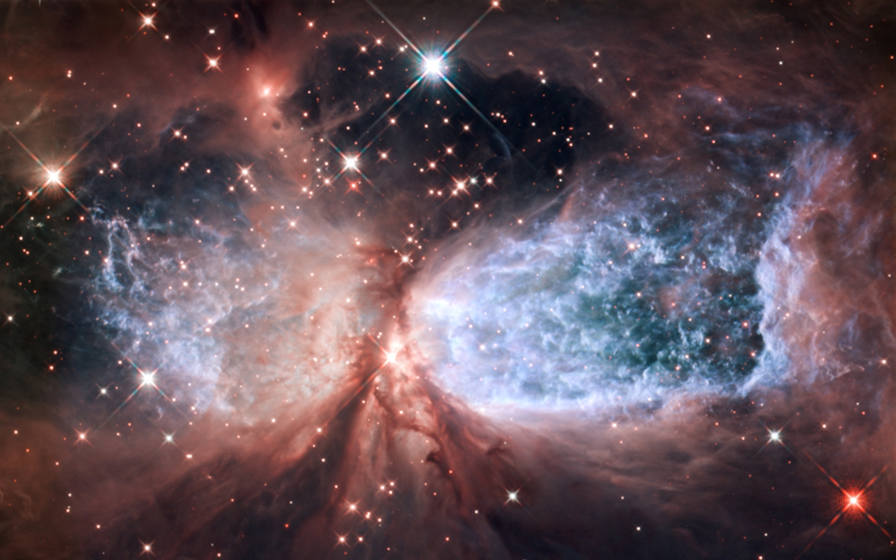
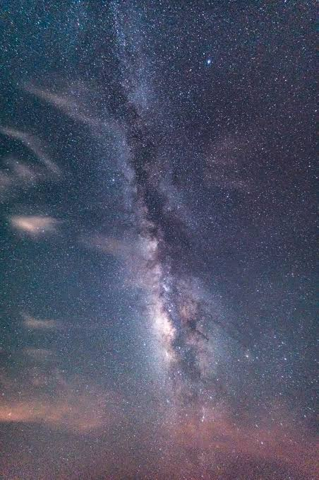

Por que as coisas se movem?
Uma bola rolando, uma bicicleta freando, um pêndulo oscilando. As leis de Newton ajudam a entender como as forças alteram o movimento dos corpos.
Teorias que explicam o universo
contato@fisicaemfoco.comA física busca entender as regras que governam a matéria, a energia, o espaço e o tempo. Com Isaac Newton, a gravitação universal explicou a queda de uma maçã e a órbita da Lua com a mesma lei.
No início do século XX, Albert Einstein propôs a Teoria da Relatividade e mostrou que massa e energia se relacionam pela famosa equação E = mc². Ao mesmo tempo, Marie Curie investigava a radioatividade e Max Planck, Niels Bohr e Werner Heisenberg davam os primeiros passos da Mecânica Quântica.
Aqui você encontra a história dos grandes físicos e uma explicação simples das teorias que mudaram a forma como enxergamos o universo.
Explore a física
Três maneiras de olhar com mais atenção para o que está ao nosso redor.
Uma bola rolando, uma bicicleta freando, um pêndulo oscilando. As leis de Newton ajudam a entender como as forças alteram o movimento dos corpos.
A luz branca reúne diferentes cores. Ao atravessar um prisma, cada uma sofre um desvio diferente, revelando o espectro que também vemos no arco-íris.
A gravidade da Terra curva continuamente o caminho da Lua. A mesma interação que faz um objeto cair ajuda a explicar o movimento dos astros.
Dos detalhes de uma nebulosa à imensidão do céu noturno. Clique nas imagens para ampliar.


Tem uma dúvida sobre física ou uma ideia para os próximos temas? Envie sua sugestão e ajude a escolher o que vamos explorar por aqui.
Conheça a localização da sede da agência espacial norte-americana.
Edifício
Mary W. Jackson NASA Headquarters
Endereço
300 E Street SW
Washington, D.C.
Código postal: 20546
Estados Unidos